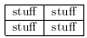
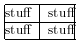
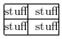
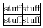

[ Prev ]
[ Index ]
[ Next ]
Latex
Created Sobota 22 říjen 2011
Beamer
\documentclass[xcolor=dvipsnames]{beamer}
\usetheme{Darmstadt or Warsaw}
- dobré jsou:
- Berkeley - pěkná zvýraznění sktruktury - nalevo
- Antibes - struktura nahoře
- Boadilla - jednoduché, žádná lišta nahoře, hodně místa na text a obr
- default (boxes) - bez jakých kolik lišt, jen nadpis a text
- CambridgeUS - pěkné, i lišta dole, jen červené?
- Copenhagen - pěkné, málo místa na text, pozn. dobré na konferenci, když někdo příde pozdě, ví co je za téma, kdo prezentuje a v jaké části prezentace je
- Frankfurt, Darmstadt - podobné, Frankfurt o lištu méně
- Goettingen - lišta napravo = Hannover - lišta nalevo (modré?!)
- JuanLesPins - super, pěkné, podobné Darmstadt, lepší struktura
- \usefonttheme{default | professionalfonts | serif | structurebold | structureitalicserif | structuresmallcapsserif }
- \usecolortheme{albatross | beaver | beetle | crane | default | dolphin | dove | fly | lily | orchid | rose |seagull | seahorse | sidebartab | structure | whale | wolverine}
- hyperlinkn a jiný slide prezentace:
\hyperlink{zacatek<5>}{\beamergotobutton{Návrat na úvod}}
- sloupce + animace - postupné zobrazování
\begin{frame}
\frametitle{Classifiers}
\begin{columns}
\column{5cm}
\begin{itemize}
\item<1-3> Indice NDVI
\item<2-3> Unsupervised Classification (ISOdata)
\item<3> Supervised Classification (used Signature Editor)
\end{itemize}
\column{5cm}
\includegraphics<1>[scale=0.35]{pict/NDVI.png}
\includegraphics<2>[scale=0.35]{pict/Isodata.png}
\includegraphics<3>[scale=0.35]{pict/SupervisedCl.png}
\end{columns}
\end{frame}
- pictures:
- %\begin{picture}(50,20)(30,70)
%\includegraphics[scale=0.25]{chart.png}
- block: \begin{block}{Cíle}
\end{block}
curve & 1890 & 1926 & 1974 \\
\hline
1 & 2,70 & 4,30 & 3,95 \\
2 & 2,68 & 4,53 & 4,45 \\
3 & 2,78 & 3,89 & 3,97 \\
4 & 2,81 & 3,97 & 3,86 \\
5 & 2,64 & 3,83 & 3,75 \\
\end{tabular}
- {|l|l|} 
- {|@{}l|l@{}|} 
- {|@{}l@{}|l@{}|} 
- {|@{}l@{}|@{}l@{}|} 
Backlinks: